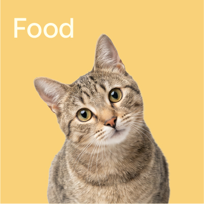

團隊教學示範多幣別帳本A

Little joys.More love.
a little care, every day ♡YOUR MONTH AT A GLANCE
日常收支，一目瞭然每一筆小記錄，都是好生活的開始。
依原幣別分開統計，不進行匯率換算。
$0
共 0 筆支出$0
收入減去支出的金額記下一筆
＋從一筆小記錄，開始掌握日常。
支出都去哪了？
月度分析看看這個月的生活分配。
◔
還沒有支出紀錄
新增第一筆，開始看見生活的輪廓。日常的每一筆
所有小小的記錄，都在這裡。
| 日期 | 描述 | 分類 | 金額 | 操作 |
|---|
這個月還沒有紀錄。從今天的第一筆開始吧。
安心記錄 · 僅儲存於此裝置